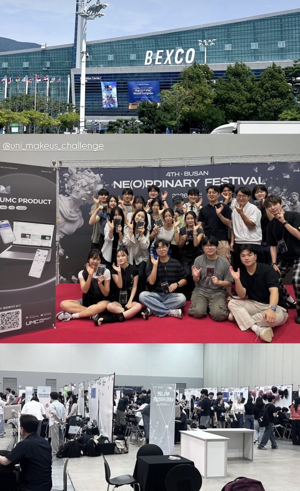
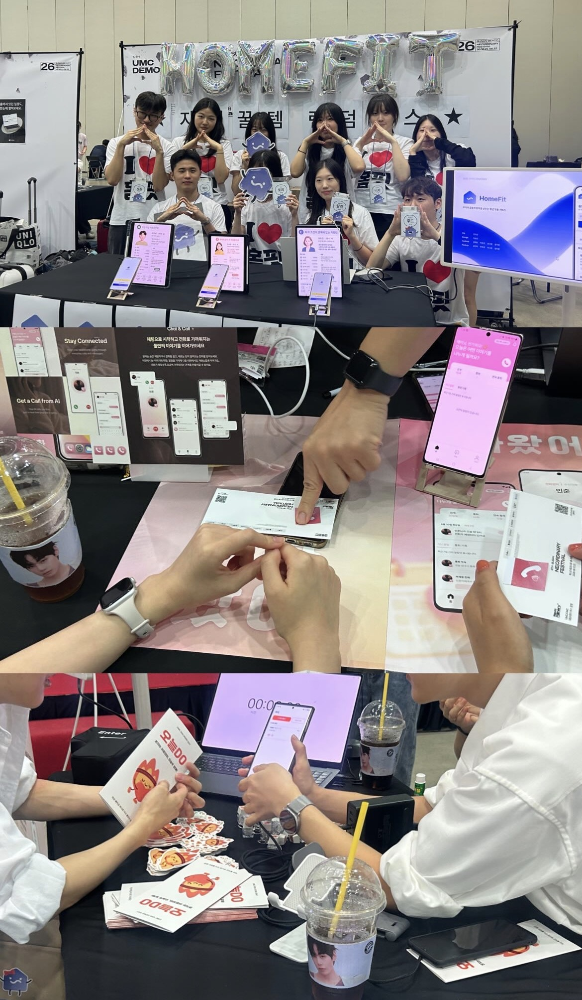
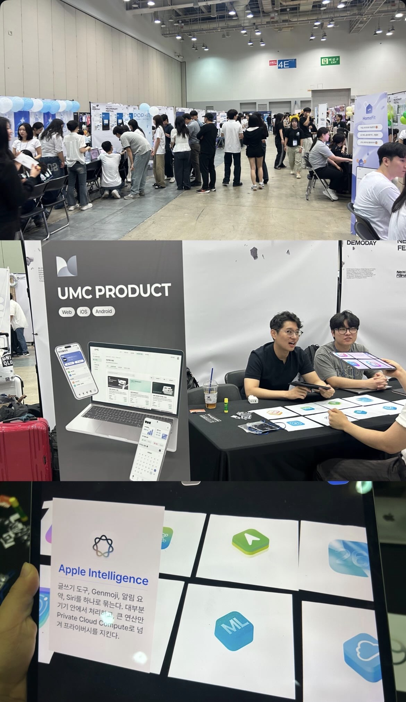
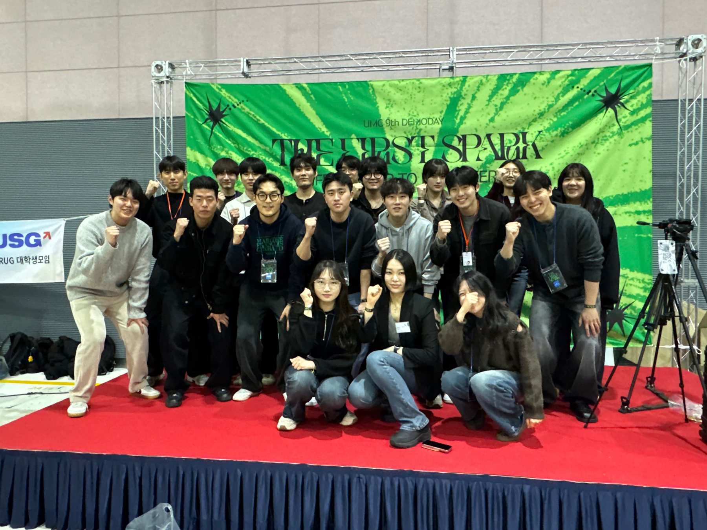
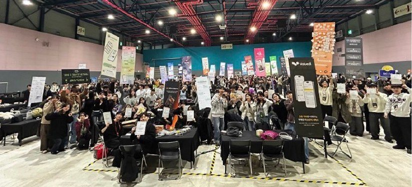
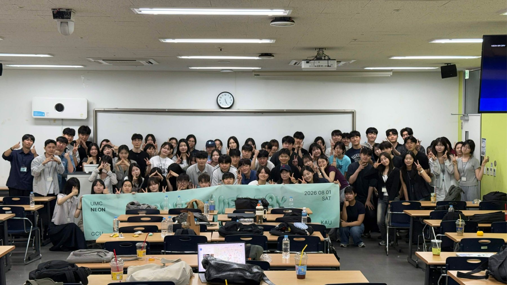
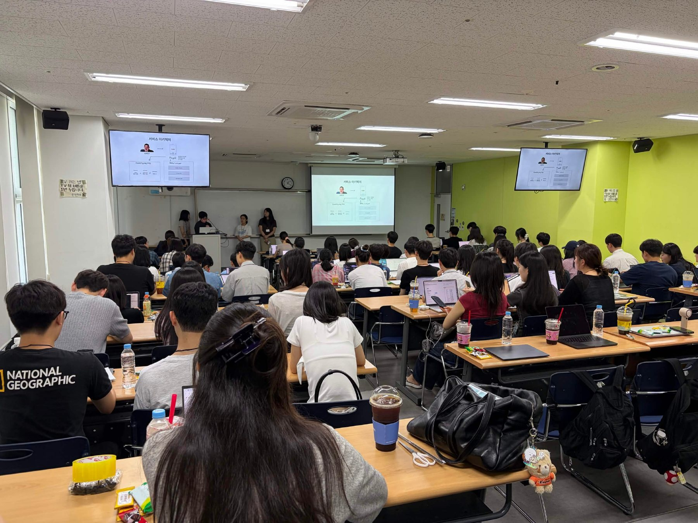
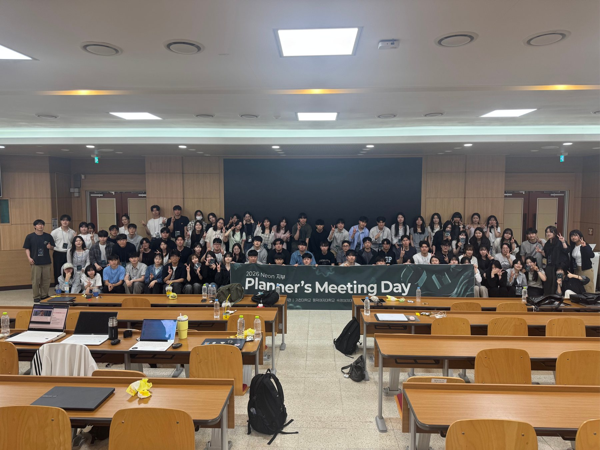
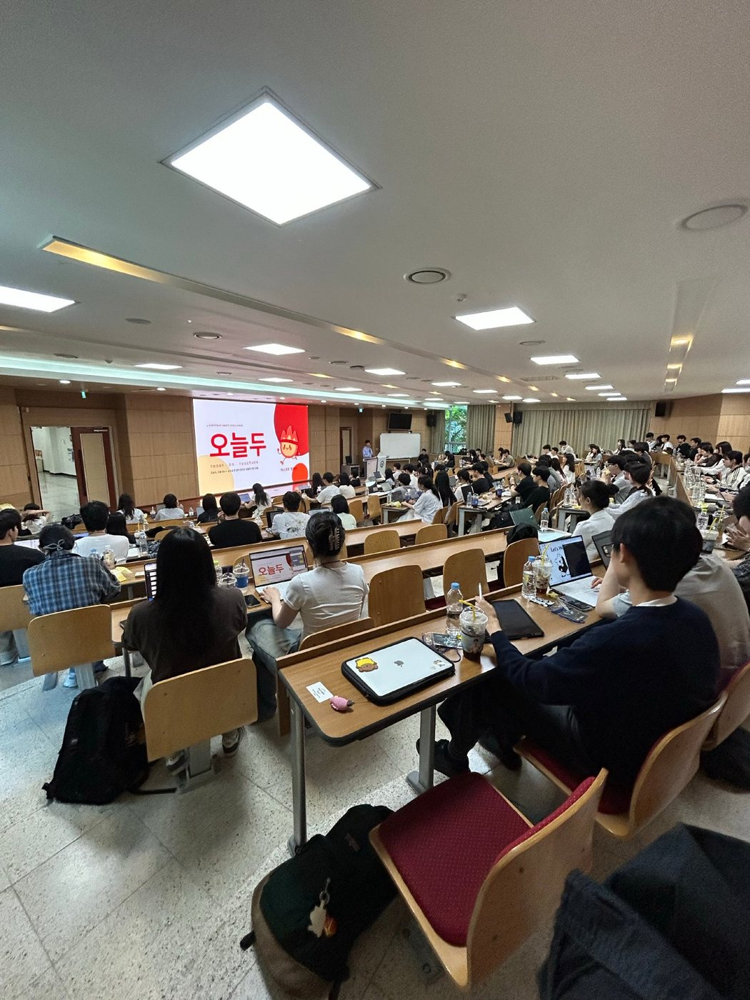
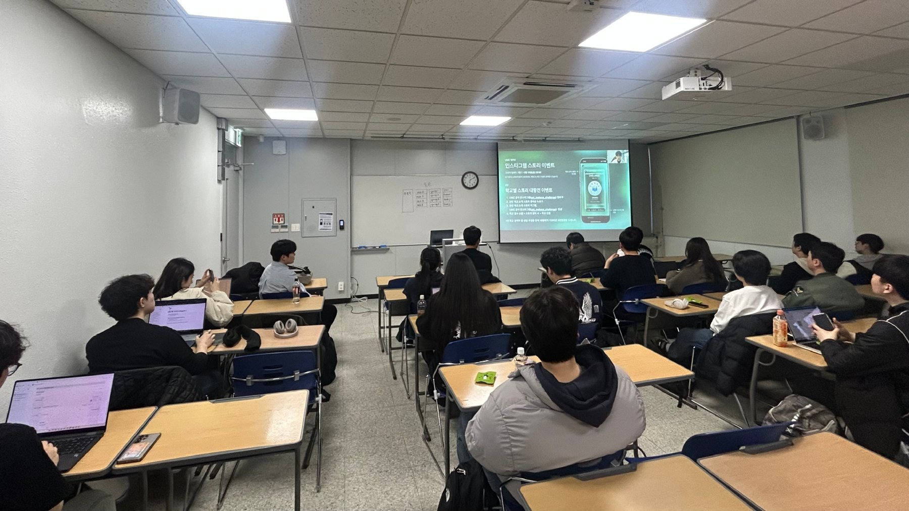

교과서 밖의 협업
기획·디자인·개발이 한 팀으로 움직이며 실제 서비스가 완성되는 과정을 경험합니다.
↗KOREA AEROSPACE UNIVERSITY · 11TH
전공도, 시작점도 상관없어요.
이번 학기와 겨울방학을 뜨겁게 채울 열정이면 충분합니다.
SCROLL TO EXPLORE ↓
UMC는 대학생이 기획, 디자인, 개발을 배우고 실제 프로젝트까지 완주하는 전국 대학 연합 IT 동아리입니다.
매주 워크북과 스터디로 실력을 쌓고, 다른 학교·다른 파트의 동료들과 팀을 이루어 아이디어를 작동하는 서비스로 만듭니다.
혼자서는 만나기 어려운 사람, 과정, 결과를
UMC에서 한 번에 경험하세요.
기획·디자인·개발이 한 팀으로 움직이며 실제 서비스가 완성되는 과정을 경험합니다.
↗학교와 전공의 경계를 넘어 같은 목표를 가진 사람들과 만나고 오래 갈 동료를 만듭니다.
↗10주 스터디에서 배운 것을 방학 프로젝트로 연결해 포트폴리오와 실전 경험을 함께 만듭니다.
↗잘하는 것이 아직 없어도 괜찮아요.
해보고 싶은 역할에서 시작하세요.
문제 발견부터 서비스 전략과 화면 설계까지
사용자 경험을 시각 언어와 프로토타입으로
프론트엔드와 백엔드를 오가며 웹 서비스를 끝까지
사용자의 손안에서 동작하는 모바일 제품을
+ Infra 심화 PE 트랙 수료자 중 희망자는 8–10주차에 별도 심화 워크북을 선택할 수 있습니다.
매주 워크북 수행과 대면 스터디,
그리고 인증샷으로 함께 완주합니다.
PLAN서비스 기획 입문 · 문제 정의 · 리서치
DESIGNFigma · UI 디자인 · Pain Point
PE데이터 모델링 · UI 기초 · 개발 환경
PLAN비즈니스 모델 · UX · 기능 정의
DESIGN와이어프레임 · 디자인 시스템 · UI
PECRUD · 상태 관리 · API · 인증/인가
PLAN화면 설계 · 프로젝트 관리 · 품질 검증
DESIGN프로토타입 · 포트폴리오 · 협업
PE핵심 로직 · 안정화 · 배포/출시
PLANPM으로 팀의 문제와 방향을 이끌기
DESIGN제품 경험을 설계하고 검증하기
PE실제 서비스를 구현하고 배포하기
학교 안에서 시작해 전국의 챌린저와 연결되고,
함께 만든 것을 무대 위에 올립니다.



10TH DEMO DAY · 20262026년 10기 챌린저들이 너디너리 페스티벌에서 직접 만든 서비스를 선보이고, 현장의 사용자들과 만났습니다.


BUILD TO SHOW스터디와 프로젝트의 끝에서, 실제 사용자를 고려해 만든 서비스를 세상에 선보입니다.


SHARE THE PROCESS지부 프로젝트 팀들이 진행 상황과 기술적 고민, 도전과 시행착오를 공유합니다.


MAKE IT BETTERPM·디자이너·개발자가 모여 아이디어를 점검하고 피드백으로 프로젝트 완성도를 높입니다.

THE FIRST STEPUMC의 문화와 커리큘럼을 만나고, 앞으로 함께 달릴 챌린저들과 처음 연결되는 순간입니다.
WE ARE LOOKING FOR
전공자나 경력자만을 찾지 않습니다. 배우려는 태도와 질문할 용기를 봅니다.
문과, 이과, 공대 모두 환영합니다. 서로 다른 관점이 더 나은 서비스를 만듭니다.
학기 중 스터디부터 겨울방학 프로젝트까지 책임 있게 달릴 수 있어야 합니다.
UMC KAU 11TH
서류 모집
08.17 — 09.04면접
09.05 — 09.06최종 결과 발표
09.07연합 OT
09.11 · 18:00학교 OT
09.11 · 19:00학기 스터디 + 겨울방학 프로젝트
프로젝트 참가 시 30,000원 별도
겨울방학까지 책임 있게 참여 가능한 분
가능합니다. 전공과 기존 경험보다 성장 의지와 겨울방학까지 책임 있게 참여할 수 있는지를 중요하게 봅니다.
주 1회, 총 10주간 대면 스터디가 진행됩니다. 매주 워크북을 수행하고 학교별 파트 스터디에서 학습 내용을 나눕니다.
스터디 수료 후 진행되는 서비스 개발 프로젝트는 UMC 활동의 핵심 과정입니다. 지원 전 겨울방학 일정을 꼭 확인해 주세요.
네. 두 OT 모두 필수 일정이며, 불참 시 합격이 취소될 수 있습니다.
UMC KAU 11TH RECRUITING